Sospendere una delibera condominiale illegittima: come funziona
Impugnare una delibera condominiale non ne blocca automaticamente l'esecuzione. Per fermare i suoi effetti serve una specifica sospensione giudiziale, concessa solo in presenza di …
Recesso dai contratti finanziari online: cosa sta cambiando
Si discute di nuove regole che imporrebbero alle piattaforme finanziarie online un tasto di recesso immediato e maggiore trasparenza contrattuale. La portata e gli estremi normativ…
Manutenzione del giardino privato in condominio: chi paga?
Una recente pronuncia del Tribunale di Castrovillari torna sul riparto delle spese per la manutenzione di un giardino di proprietà esclusiva, ipotizzando che il costo possa gravare…
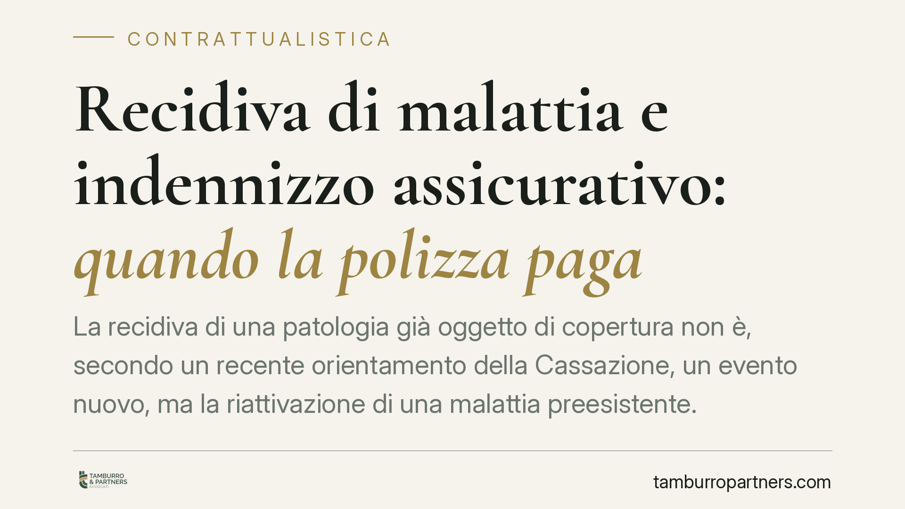
Recidiva di malattia e indennizzo assicurativo: quando la polizza paga
La recidiva di una patologia già oggetto di copertura non è, secondo un recente orientamento della Cassazione, un evento nuovo, ma la riattivazione di una malattia preesistente. La…
Terrazza a livello: chi paga il rifacimento del parapetto
Il parapetto di una terrazza a livello non è un elemento di utilità comune: il suo rifacimento grava sul solo proprietario esclusivo, non sul condominio. Un principio confermato da…
Cani in condominio: quando il regolamento contrattuale può limitarne il numero
Un regolamento condominiale di natura contrattuale può limitare il numero di cani ospitabili nelle unità immobiliari. Resta però fermo il divieto, sancito dalla legge, di impedire …
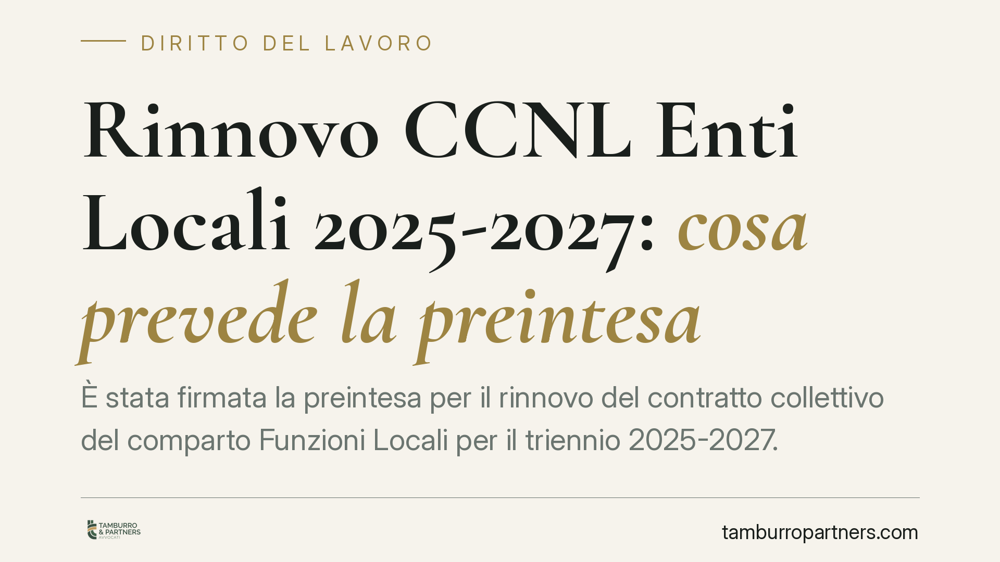
CCNL Enti Locali 2025-2027: cosa cambia con la preintesa
È stata sottoscritta la preintesa per il rinnovo del CCNL del comparto Funzioni Locali 2025-2027. Le cifre diffuse parlano di aumenti fino a circa 154 euro e arretrati per centinai…
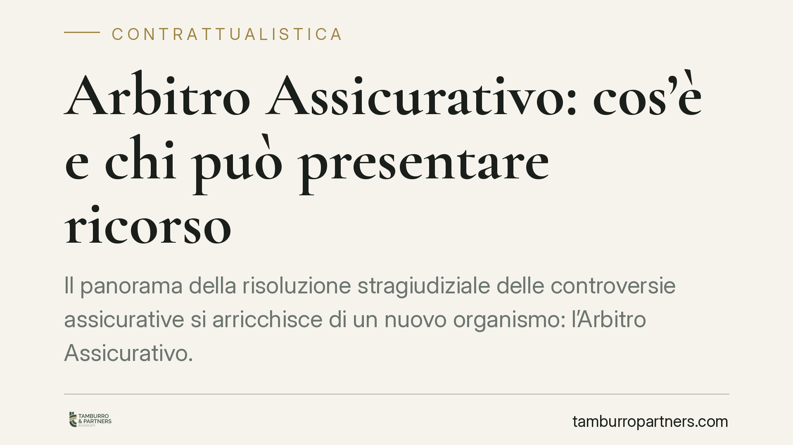
Arbitro Assicurativo: cos'è e chi può presentare ricorso
Il panorama della risoluzione stragiudiziale delle controversie assicurative si arricchisce di un nuovo organismo: l'Arbitro Assicurativo. Sul modello dell'Arbitro Bancario Finanzi…
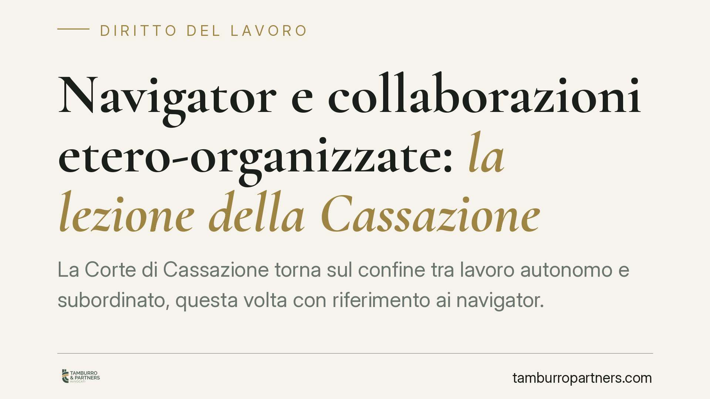
Navigator e collaborazioni etero-organizzate: la lezione della Cassazione
La Corte di Cassazione torna sul confine tra lavoro autonomo e subordinato, questa volta con riferimento ai navigator. Il principio: quando la collaborazione è organizzata dal comm…
Compenso dell'avvocato: quando l'accordo deve essere scritto
La Corte di Cassazione torna sul tema del compenso dell'avvocato, ribadendo quando l'accordo economico deve rivestire forma scritta e come si determina la parcella in assenza di in…
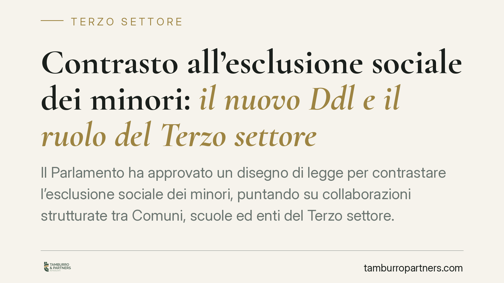
Contrasto all'esclusione sociale dei minori: il nuovo Ddl e il ruolo del Terzo settore
Il Parlamento ha approvato un disegno di legge per contrastare l'esclusione sociale dei minori, puntando su collaborazioni strutturate tra Comuni, scuole ed enti del Terzo settore.…
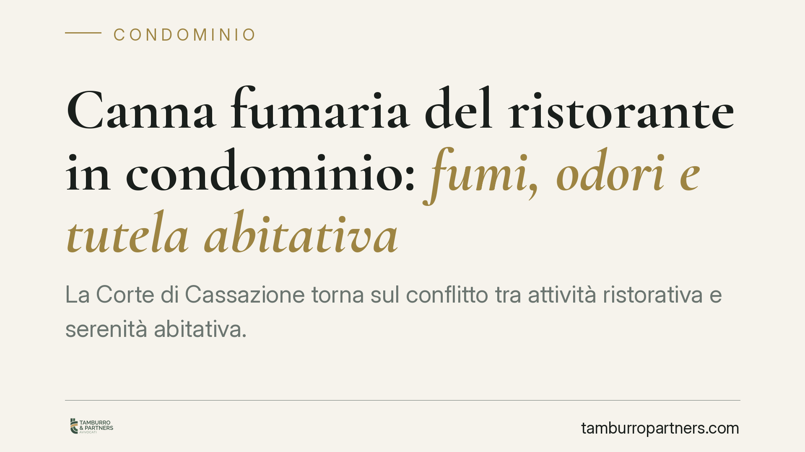
Canna fumaria del ristorante in condominio: fumi, odori e tutela abitativa
La Corte di Cassazione torna sul conflitto tra attività ristorativa e serenità abitativa. Le immissioni di fumi e odori da canna fumaria non si valutano in astratto: servono un acc…
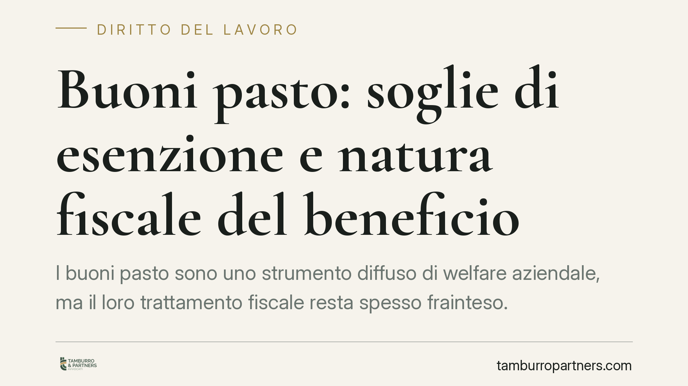
Buoni pasto: soglie di esenzione e natura fiscale del beneficio
I buoni pasto sono uno strumento diffuso di welfare aziendale, ma il loro trattamento fiscale resta spesso frainteso. Tra soglie di esenzione differenziate per formato, eccedenze i…
Smart working per lavoratori fragili: quando è un diritto
Lo smart working per i lavoratori fragili non è sempre una concessione: in molti casi è un obbligo per il datore di lavoro. La disciplina, nata in emergenza Covid, si è intrecciata…
General contractor e bonus edilizi: conta la sostanza del contratto
Il general contractor nei bonus edilizi non è per definizione un semplice coordinatore. Ciò che qualifica il suo ruolo - e la detraibilità del suo margine - è il contenuto effettiv…
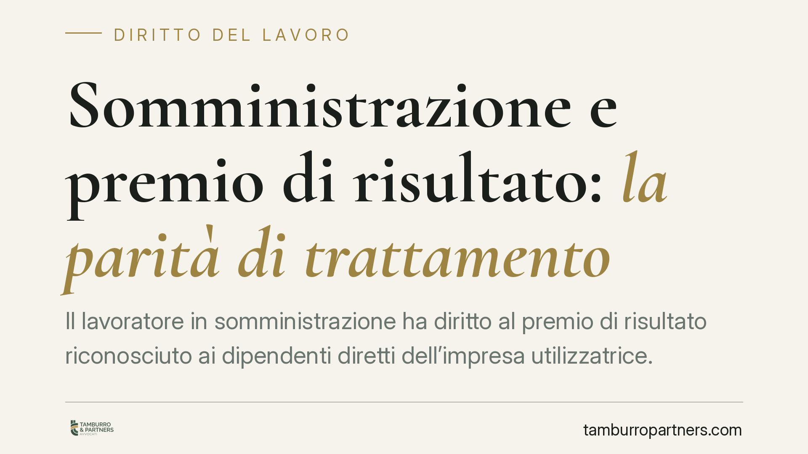
Somministrazione e premio di risultato: la parità di trattamento
Il lavoratore in somministrazione ha diritto al premio di risultato riconosciuto ai dipendenti diretti dell'impresa utilizzatrice. Il principio, fondato sulla parità di trattamento…
Controllo delle chat aziendali: cosa può fare il datore di lavoro
Le chat aziendali sono strumenti di lavoro, non zone franche dal diritto. Il datore può accedervi, ma solo entro limiti precisi fissati dallo Statuto dei lavoratori e dal GDPR. Il …
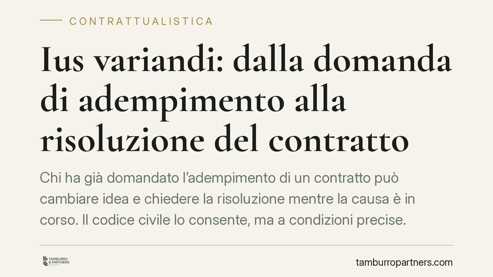
Ius variandi: dalla domanda di adempimento alla risoluzione del contratto
Chi ha già domandato l'adempimento di un contratto può cambiare idea e chiedere la risoluzione mentre la causa è in corso. Il codice civile lo consente, ma a condizioni precise. Ca…
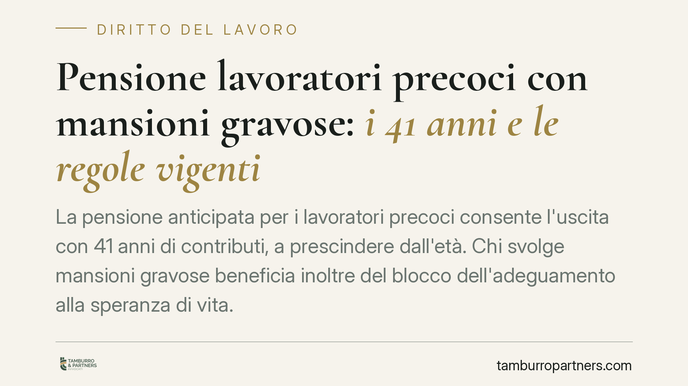
Pensione lavoratori precoci con mansioni gravose: i 41 anni e le regole vigenti
La pensione anticipata per i lavoratori precoci consente l'uscita con 41 anni di contributi, a prescindere dall'età. Chi svolge mansioni gravose beneficia inoltre del blocco dell'a…
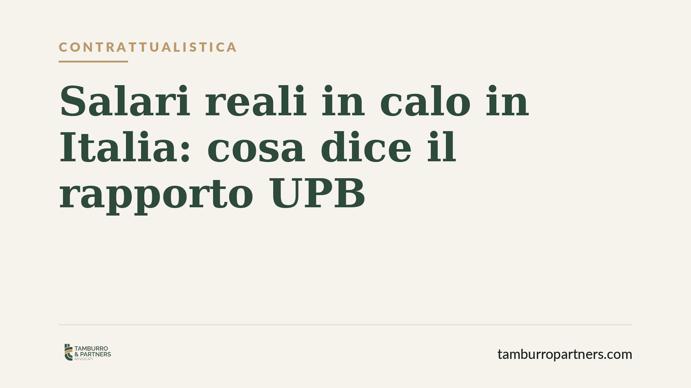
Salari fermi da trent'anni in Italia: cosa dice il rapporto UPB
L'Ufficio parlamentare di bilancio segnala un dato senza precedenti: tra il 1990 e il 2024 le retribuzioni reali in Italia sono diminuite del 6,6%, unico caso nell'area OCSE. Il ca…

Interessi del mutuo e usura: quando il tasso diventa illegale
Un mutuo con interessi troppo alti può sfociare nell'usura. La Legge 108/1996 fissa soglie precise, aggiornate ogni trimestre, oltre le quali il tasso diventa illegale. Capire come…

Mutuo alla francese, usura e determinatezza: il punto del Tribunale di Cremona
Una recente pronuncia del Tribunale di Cremona affronta un nodo tornato al centro del contenzioso bancario: l'ammortamento alla francese, il regime di capitalizzazione e la determi…

Legge 104 e permessi frazionati: più familiari lo stesso giorno
Un orientamento dell'Aran apre alla possibilità che più familiari fruiscano dei permessi orari ex Legge 104 nello stesso giorno per assistere la stessa persona con disabilità grave…

Compenso dell'avvocato senza contratto firmato: cosa serve davvero
Quando manca un contratto firmato, l'avvocato può comunque chiedere il proprio compenso? La questione non riguarda la validità dell'accordo, ma la sua prova. Il punto pratico è dup…

Riserva di posti nei concorsi PA: conta la sostanza, non la casella
Un dipendente pubblico dimentica di barrare la casella della riserva di posti nella domanda di concorso. Quel titolo si perde per sempre? Una recente pronuncia del Consiglio di Sta…

Installare l'ascensore in condominio: maggioranze e spese
Molti edifici datati sono privi di ascensore. Installarlo è possibile, ma la procedura cambia sensibilmente a seconda che l'opera serva ad abbattere barriere architettoniche o rapp…

Vendite solidali e trasparenza: gli obblighi per enti, aziende e influencer
Le cosiddette vendite solidali - prodotti o campagne che promettono una quota del ricavato a un fine benefico - finiscono sotto una lente più rigorosa. Non nasce una disciplina org…

Amministratore in prorogatio: niente compenso per la gestione ordinaria
Il Tribunale di Lecce ha annullato le delibere che riconoscono un compenso pieno all'amministratore scaduto e non riconfermato. Durante la cosiddetta prorogatio i suoi poteri si ri…

Docenti caregiver e Legge 104: i limiti della precedenza nei trasferimenti
La precedenza riconosciuta ai docenti che assistono un familiare disabile non garantisce da sola la sede desiderata. La giurisprudenza di legittimità conferma che il diritto al rav…

Pensioni collegate al reddito: quando scattano sospensione e revoca della quota
Chi riceve prestazioni pensionistiche legate al reddito deve rispondere alle campagne di verifica reddituale dell'INPS. La mancata o tardiva risposta può comportare la sospensione …